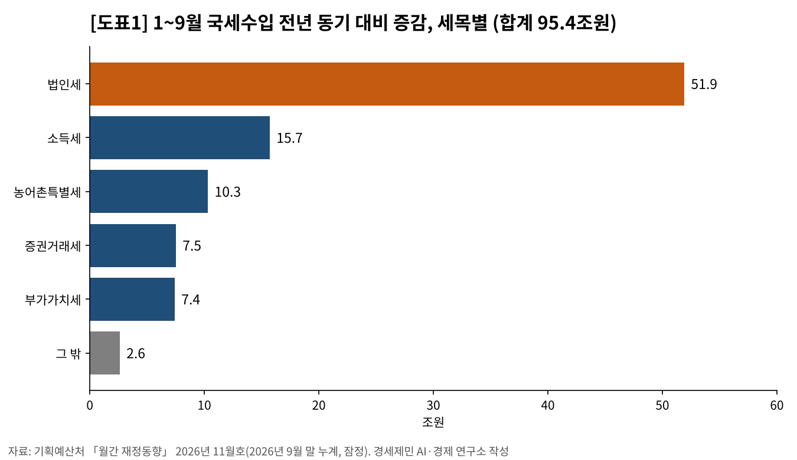
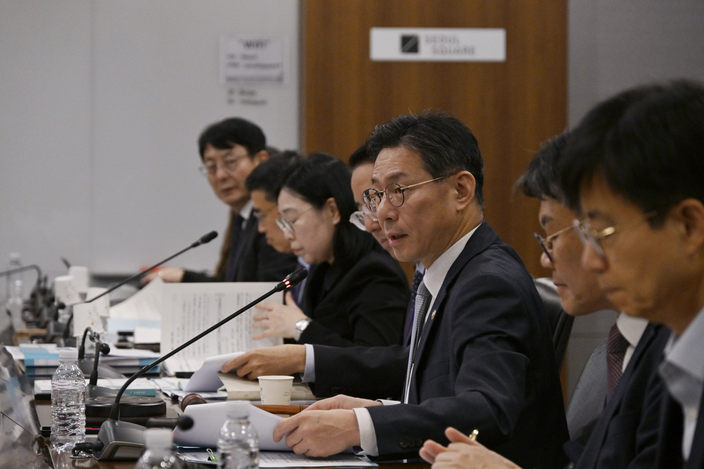
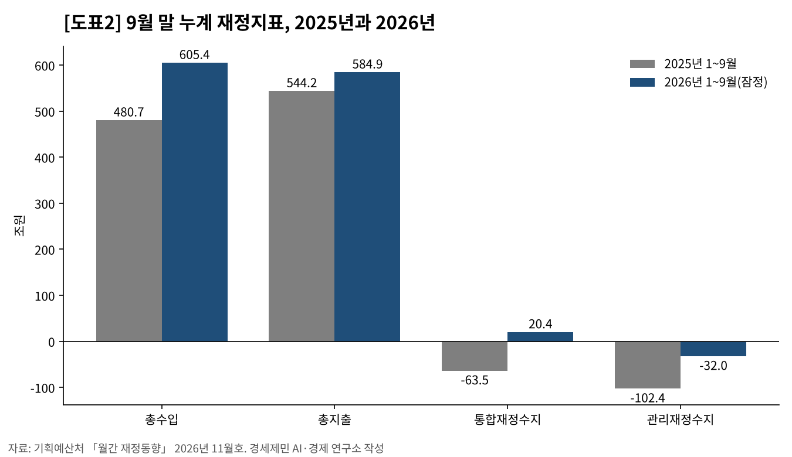
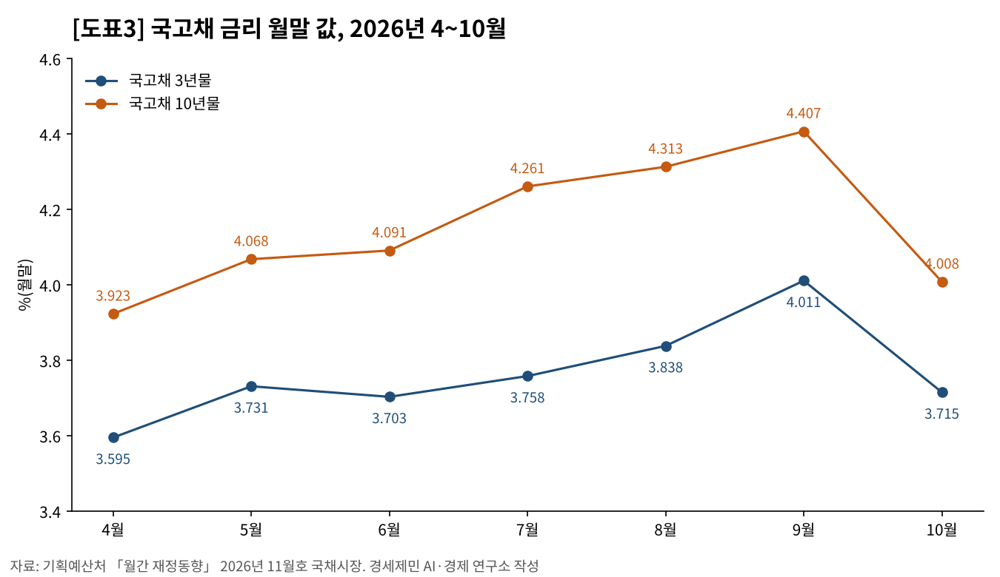
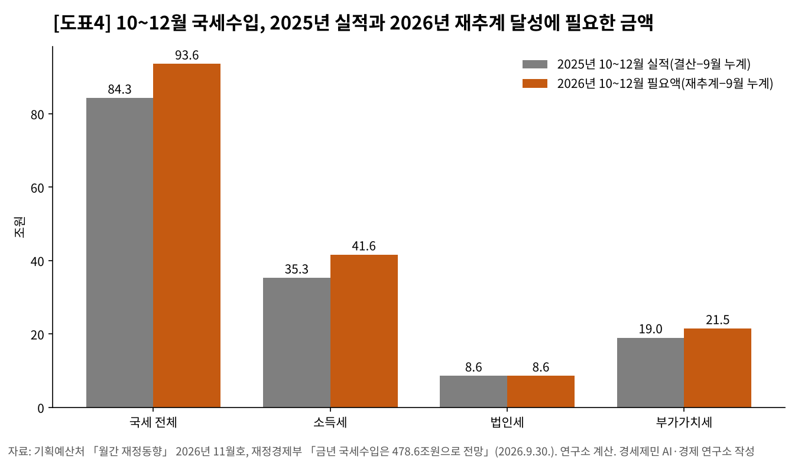
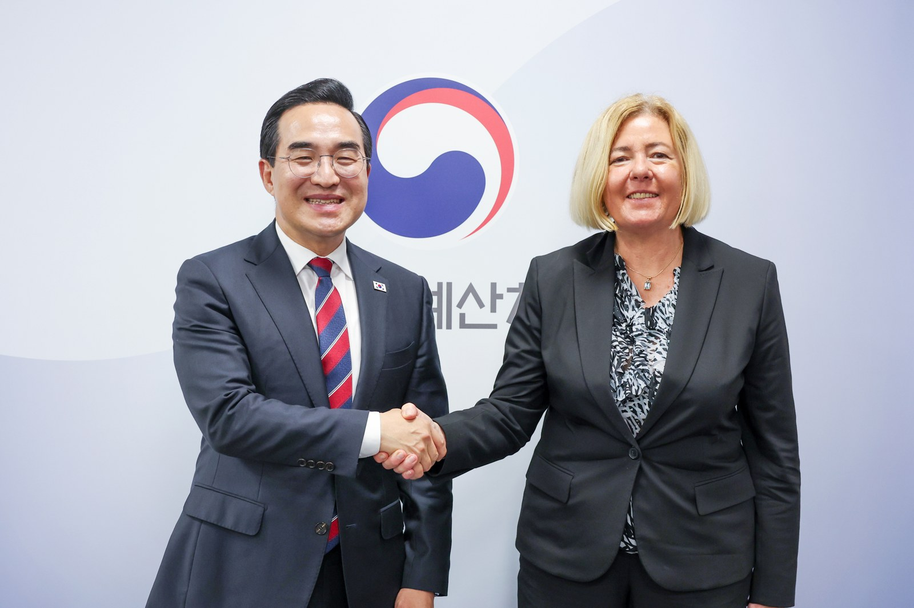
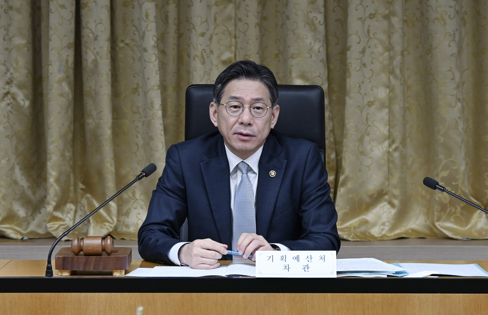
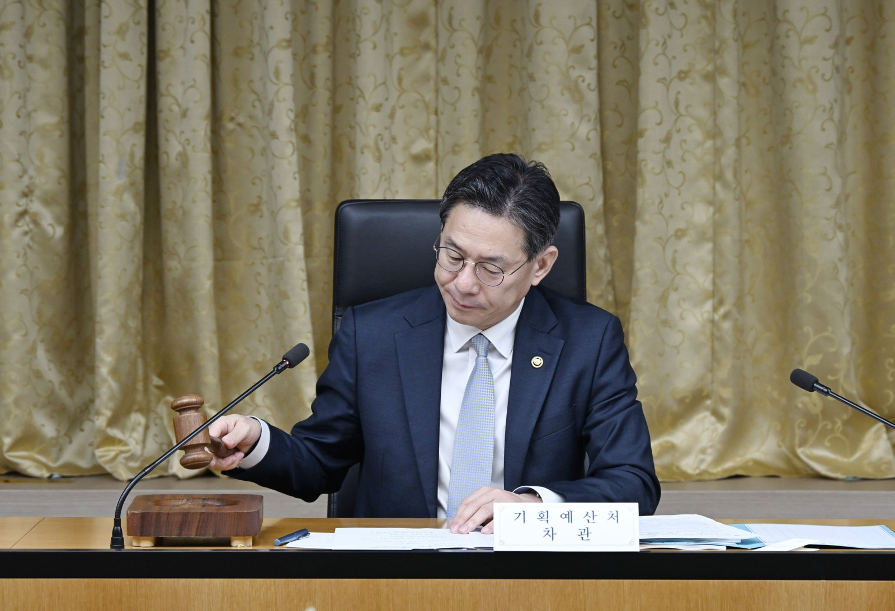
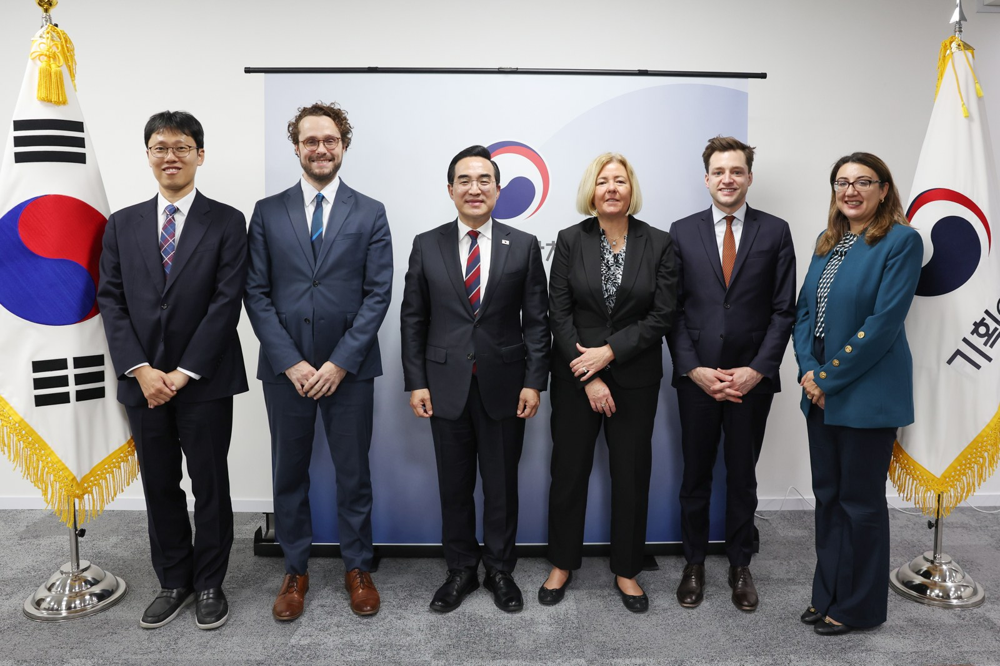

[재정 브리핑③] 관리재정수지 적자 32조원 속 중앙정부 채무 101조원 증가
국세 385조원, 재추계의 80.4%
법인세 127조 8,000억원, 추경예산의 126.2%
남은 석 달 필요 국세 93조 6,000억원
요약
기획예산처가 11월 12일 낸 「월간 재정동향」 11월호를 보면 2026년 1~9월 총수입은 605조 4,000억원, 총지출은 584조 9,000억원이다. 통합재정수지는 20조 4,000억원 흑자, 사회보장성기금 수지를 뺀 관리재정수지는 32조원 적자다. 1년 전 같은 기간보다 각각 83조 9,000억원, 70조 5,000억원 나아졌다.
국세수입은 385조원으로 1년 전보다 95조 4,000억원 늘었다. 증가분의 54.4%인 51조 9,000억원이 법인세다. 법인세는 9월까지 추경예산 101조 3,000억원의 126.2%를 걷었다.
9월 말 중앙정부 채무는 1,369조 4,000억원으로 2025년 말보다 101조 3,000억원 늘었다. 같은 기간 국고채는 181조 2,000억원 발행하고 80조 2,000억원 상환했다. 통합재정수지가 9월 누계로 흑자였지만 국고채 잔액은 101조 1,000억원 늘어, 관리재정수지 적자보다 69조 1,000억원 많다(연구소 계산).
재정경제부의 9월 30일 재추계 478조 6,000억원을 채우려면 10~12월에 국세 93조 6,000억원을 더 걷어야 한다. 2025년 같은 기간 실적은 84조 3,000억원이다. 법인세 필요액 8조 6,000억원은 2025년 같은 기간 실적과 같다(연구소 계산).
국제통화기금(IMF) 협의단은 11월 17일 연례협의를 마쳤다. 협의단은 취약 가계와 기업을 골라 돕는 지원을 유지하면서 다소 긴축적인 재정 기조를 운용하면 총수요 압력을 누르는 데 도움이 된다고 했다.
제언은 셋이다. 첫째는 연말 재정수지 전망, 국고 자금 잔액, 이전지출 받는 쪽별 내역의 공표, 둘째는 국고채 발행 계획을 고친 내역의 공표다. 셋째는 2027년 예산안 심사에서 법인세 216조 7,000억원의 반도체 이익 전제를 숫자로 확인하는 일이다.
1. 배경과 목적
기획예산처는 11월 12일 9월 말 누계를 담은 「월간 재정동향」 2026년 11월호를 발간했다. 연구소는 10월 21일 8월 말 누계와 재정경제부의 국세 재추계, 2027년 예산안을 다룬 재정 브리핑을 냈다. 이 브리핑은 그 뒤 한 달 치 실적을 더해 물음 셋을 다룬다.
첫째, 9월까지 돈은 어디서 더 들어오고 어디로 더 나갔나. 둘째, 재정수지가 나아진 9월까지 중앙정부 채무는 왜 100조원 넘게 늘었나. 셋째, 재추계 478조 6,000억원을 채우려면 남은 석 달에 얼마를 더 걷어야 하나.
정부는 9월 1일 2027년 예산안을 국무회의에서 의결했다. 국회예산정책처는 11월 2일 국회에서 「2027년도 예산안 토론회」를 열어 국회 심의 방향을 논의했다. 헌법 제54조 제2항은 국회가 회계연도 개시 30일 전까지 예산안을 의결하게 정했다. 2027년 예산안의 법정 처리 기한은 12월 2일이다.
2. 자료와 방법
자료는 여덟이다. 첫째는 기획예산처 「월간 재정동향」 2026년 11월호(65쪽)와 보도자료(11월 12일)다. 둘째는 재정경제부 「금년 국세수입은 478.6조원으로 전망」(9월 30일)이다.
셋째는 재정경제부 「2027년 국세수입 예산안」(9월 1일)이다. 넷째는 기획예산처의 「2027년도 예산안」과 「2026~2030년 국가재정운용계획」 발표 자료(9월 1일)다. 다섯째는 재정경제부가 11월 17일 배포한 「2026년 국제통화기금(IMF) 연례협의 결과」와 그 붙임인 협의단 발표문 국문 번역본이다.
여섯째와 일곱째는 기획예산처의 11월 13일 기금자산운용정책위원회와 재정투자평가위원회 보도자료다. 여덟째는 국회예산정책처의 11월 2일 「2027년도 예산안 토론회」 개최 자료다. 법정 기한은 헌법 제54조로 확인했다.
2026년 수치는 모두 잠정치다. 추경예산은 2026년 추가경정예산 기준이고, 2025년 수치는 같은 자료의 결산과 9월 누계 값이다.
총수입은 국세수입, 세외수입, 기금수입을 더한 값이다. 통합재정수지는 총수입에서 총지출을 뺀 값이다. 관리재정수지는 통합재정수지에서 사회보장성기금 수지를 뺀 값이다. 사회보장성기금은 국민연금기금, 사립학교교직원연금기금, 고용보험기금, 산업재해보상보험및예방기금 넷이다.
중앙정부 채무는 국채, 차입금, 국고채무부담행위를 더한 값이다. 지방정부 채무는 해마다 한 번 산출해 월간 재정동향에 실리지 않는다.
10~12월 필요액은 재추계 연간 전망에서 9월 누계 실적을 뺀 값이다. 2025년 10~12월 실적은 2025년 결산에서 2025년 9월 누계를 뺀 값이다. 두 값 모두 연구소 계산이며, 연간 전망은 9월 30일 재추계를 기준으로 삼았다. 2025년 10~12월 값에는 결산 정리분이 섞일 수 있고, 2026년 9월 누계는 잠정치다.
3. 결과
가. 국세 95조 4,000억원 증가와 법인세 몫 54.4%
1~9월 총수입은 605조 4,000억원으로 1년 전보다 124조 6,000억원 늘었다. 추경예산 700조 6,000억원 대비 진도율은 86.4%로, 2025년 같은 시점보다 11.6%포인트 높다.
국세수입은 385조원으로 95조 4,000억원 늘었다. 세외수입은 34조원으로 9조 3,000억원, 기금수입은 186조 4,000억원으로 19조 9,000억원 늘었다. 기금수입 가운데 재산수입이 16조 5,000억원 늘었다.
세목별로는 법인세가 51조 9,000억원, 소득세가 15조 7,000억원 늘었다. 농어촌특별세는 10조 3,000억원, 증권거래세는 7조 5,000억원, 부가가치세는 7조 4,000억원 늘었다. 법인세가 국세 증가분의 54.4%, 기획예산처가 거래대금 증가를 원인으로 든 농어촌특별세와 증권거래세가 18.7%다(연구소 계산).
기획예산처는 법인세 증가 원인을 기업실적 개선으로 적었다. 소득세는 성과상여금 증가에 따른 근로소득세 증가와 부동산 거래량 증가에 따른 양도소득세 증가가 원인이다. 증권거래세는 거래대금 증가와 세율 환원으로, 농어촌특별세는 코스피 거래대금 증가로 늘었다.
증권거래세율은 2025년 코스피 0%, 코스닥 0.15%에서 2026년 각각 0.05%, 0.20%로 돌아갔다. 법인세 9월 누계 127조 8,000억원은 추경예산 101조 3,000억원의 126.2%다. 증권거래세는 9조 9,000억원으로 추경예산 10조 6,000억원의 94.2%를 걷었다. 소득세 진도율은 81.0%, 부가가치세는 78.0%다.

나. 총지출 40조 7,000억원 증가와 이전지출 몫
1~9월 총지출은 584조 9,000억원으로 1년 전보다 40조 7,000억원 늘었다. 추경예산 753조 1,000억원 대비 진도율은 77.7%로, 2025년 같은 시점보다 0.3%포인트 높다.
성질별로 보면 이전지출이 433조 8,000억원으로 36조 5,000억원 늘어, 총지출 증가분의 89.7%를 차지했다(연구소 계산). 인건비는 6,000억원, 자산취득은 4,000억원, 물건비는 1,000억원 늘었다.
총지출 증가 40조 7,000억원은 총수입 증가 124조 6,000억원의 약 3분의 1이다. 두 증가액의 차이 83조 9,000억원은 통합재정수지 개선 폭과 같다(연구소 계산).
기획예산처는 9월까지의 지출과 별도로 새 투자사업 심사도 이어 갔다. 11월 13일 제9차 재정투자평가위원회를 열어 예비타당성조사와 타당성재조사 결과를 의결했다. 호미반도 국가해양생태공원 조성, 국세청 AI시스템 구축, 백령도 소형공항 건설 세 사업이 타당성을 확보했다. 철도종합시험선로 순환선 구축사업은 예비타당성조사 대상으로 선정됐다.

다. 통합재정수지 흑자 20조 4,000억원과 관리재정수지 적자 32조원
통합재정수지는 9월 누계 20조 4,000억원 흑자다. 2025년 같은 기간 63조 5,000억원 적자에서 83조 9,000억원 나아졌다. 사회보장성기금 수지 흑자 52조 4,000억원을 빼면 관리재정수지는 32조원 적자다. 2025년 같은 기간 102조 4,000억원 적자에서 70조 5,000억원 나아졌다.
추경예산의 2026년 연간 계획은 통합재정수지 52조 5,000억원 적자, 관리재정수지 107조 6,000억원 적자다. 2025년에는 9월 누계 관리재정수지 적자 102조 4,000억원이 결산에서 104조 2,000억원이 됐다.

라. 중앙정부 채무 101조 3,000억원 증가
9월 말 중앙정부 채무는 1,369조 4,000억원으로 8월 말보다 2조 7,000억원 줄었다. 한 달 새 국고채 1조원, 외국환평형기금채권 1조 2,000억원, 국민주택채권 3,000억원이 줄었다. 2025년 말 1,268조 1,000억원보다는 101조 3,000억원 많다.
2025년 말 대비 증감을 보면 국고채 잔액이 101조 1,000억원 늘었다. 정부는 이 기간 국고채를 181조 2,000억원 발행하고 80조 2,000억원 상환했다. 외국환평형기금채권은 3조 5,000억원 늘고 국민주택채권은 3조 1,000억원 줄었다.
1~10월 국고채 발행은 196조 1,000억원으로 연간 발행 한도의 87.7%다. 11월호의 재정운용동향 장(4~13쪽)에는 국고 자금 잔액 항목이 없다. 기획예산처는 한도를 2026년 본예산 국고채 발행한도 225조 7,000억원에서 개인투자용 국채 2조원을 뺀 값으로 셈했다. 10월 발행은 16조 4,000억원으로 당초 계획보다 5조원 적었다.
10월 국고채 평균 조달금리는 연 4.07%로 9월 4.25%보다 낮아졌다. 국고채 10년물 금리는 4월 말 3.923%에서 9월 말 4.407%까지 올랐다가 10월 말 4.008%로 내렸다. 기획예산처는 10월 금리 하락 요인으로 발행물량 축소에 따른 수급 부담 완화와 외국인 국채선물 순매수 18조 1,000억원을 들었다.
10월 말 외국인 국고채 보유잔액은 326조 5,000억원으로 한 달 새 6조 9,000억원 늘었고, 보유 비중은 25.7%다.

마. 재추계 달성에 필요한 10~12월 국세 93조 6,000억원
재정경제부는 9월 30일 2026년 국세수입을 478조 6,000억원으로 다시 전망했다. 추경예산 415조 4,000억원보다 63조 2,000억원 많다. 재정경제부는 반도체 호황에 따른 영업이익 급증, 반도체 기업 특별배당, 증시 활성화, 민간소비 회복을 원인으로 들었다.
9월 누계 385조원은 재추계의 80.4%다. 재추계를 채우려면 10~12월에 93조 6,000억원을 더 걷어야 한다. 2025년 10~12월 국세 실적은 84조 3,000억원이다(연구소 계산).
세목별 10~12월 필요액은 소득세 41조 6,000억원, 부가가치세 21조 5,000억원, 법인세 8조 6,000억원이다. 2025년 같은 기간 실적은 소득세 35조 3,000억원, 부가가치세 19조원, 법인세 8조 6,000억원이다(연구소 계산).
법인세는 재추계 136조 4,000억원의 93.7%를 9월까지 걷었다. 소득세는 재추계 152조 4,000억원의 72.7%, 부가가치세는 89조원의 75.8%를 걷었다(연구소 계산).

바. 국제통화기금 협의단의 재정 권고
코린 들레샤(Corinne Deléchat) 단장이 이끈 국제통화기금 협의단은 11월 3일부터 17일까지 한국을 방문해 2026년 연례협의를 했다. 박홍근 기획예산처 장관은 11월 16일 서울 중구 한국재정정보원에서 협의단을 만났다.
협의단은 발표문에서 글로벌 인공지능 호황이 사상 최대 반도체 수출을 이끌며 견조한 기업 실적과 재정수입 증가로 이어지고 있다고 적었다. 그 결실이 아직 첨단기술 산업에 몰려 있고, 경제 전반으로는 점진적으로 퍼질 것으로 봤다.
협의단은 실질 국내총생산 성장률을 2026년 3.9%, 2027년 3.3%로, 물가상승률을 2026년 2.7%, 2027년 2.3%로 전망했다. 인플레이션 압력이 굳어지지 않게 추가 통화 긴축이 적절하다고 했다. 재정은 취약 가계와 기업을 골라 돕는 지원을 유지하면서 다소 긴축적인 기조를 운용하면 총수요 압력을 누르는 데 도움이 된다고 했다.
협의단은 재정 안정화 수단으로 미래대응기금 신설을 환영하며, 재정정책의 경기대응성 강화에 도움이 될 것으로 봤다. 발표문은 협의단의 잠정 평가다. 국제통화기금 이사회는 2027년 1월 중(잠정) 연례협의 보고서를 논의한다.


4. 해석
가. 법인세와 증시가 만든 수지 개선
1~9월 국세 증가분의 73.1%가 법인세, 농어촌특별세, 증권거래세 세 세목에서 나왔다(연구소 계산). 기획예산처와 재정경제부가 든 원인도 기업실적, 반도체 특별배당, 증시 거래대금이다. (연구소 판단) 9월까지의 수지 개선은 지출을 줄여서가 아니라 수입이 지출보다 빨리 늘어 생겼다.
법인세는 9월까지 재추계의 93.7%를 걷어, 남은 석 달의 몫이 작다. 10~12월 필요액 가운데 소득세와 부가가치세가 67.4%다(연구소 계산).
(연구소 판단) 연말 국세가 재추계에 닿을지는 10~12월 소득세와 부가가치세 실적에 달렸다. 소득세와 부가가치세 필요액은 2025년 같은 기간 실적보다 각각 6조 3,000억원, 2조 5,000억원 많다(연구소 계산).
국제통화기금 협의단도 재정수입 증가를 반도체 수출과 기업 실적에서 찾았다. 같은 발표문은 그 결실이 아직 첨단기술 산업에 몰려 있다고 적었다. 재정경제부는 재추계 상향 원인을 「예측이 어려웠던 거시경제 변화」로 설명했다. (연구소 판단) 세수의 원천이 몇 업종에 몰리면 업황이 꺾일 때 세수도 함께 줄 수 있다.
나. 관리재정수지 적자 32조원과 채무 101조원 증가의 차이
재정수지는 수입과 지출의 차이이고, 채무는 국채 발행과 상환의 결과다. 국고채는 예산에 정한 연간 발행한도 안에서 발행한다. 월간 재정동향은 10월 국고채 발행이 당초 계획보다 5조원 적었다고 적었다. 1~10월 발행은 연간 한도의 87.7%다.
통합재정수지 흑자 20조 4,000억원에는 사회보장성기금 흑자 52조 4,000억원이 들어 있고, 이를 뺀 관리재정수지는 32조원 적자다. 1~9월 국고채 잔액 순증 101조 1,000억원은 이 적자보다 69조 1,000억원 많다(연구소 계산).
(연구소 판단) 국채로 메울 살림의 크기는 관리재정수지로 보는 편이 맞다. 그렇다면 9월 말까지 국고채로 조달한 돈 가운데 69조원가량은 적자 보전에 쓰이지 않았다. 상환지출과 연말 지출 계획을 따로 가르지 않은 대략값이다. 국고 자금 잔액이 월간 재정동향에 실리지 않아 이 몫이 어디에 얼마 있는지는 이 자료로 알 수 없다.
기금이 가진 여유자금의 운용 방향도 같은 달 논의됐다. 기획예산처는 11월 13일 제4차 기금자산운용정책위원회를 열어 국민성장펀드·혁신성장벤처펀드 등 신규 대체투자상품 8건의 적정성 검토 결과를 논의했다. 기획예산처는 두 펀드를 중심으로 기금의 대체투자 규모가 크게 늘고, 투자대상과 운용방식이 다변화하고 있다고 적었다.


다. 긴축 권고와 2027년 예산안
국제통화기금 협의단은 다소 긴축적인 재정 기조가 총수요 압력을 누르는 데 도움이 된다고 했다. 정부가 9월 1일 국무회의에서 의결한 2027년 예산안은 총지출을 전년 대비 12.8% 늘린 820조 9,000억원으로 잡았다. 국세수입은 584조 4,000억원이다.
기획예산처는 추가세수 162조 3,000억원 가운데 45조 4,000억원을 청년, 성장동력, 지방, 교육·인재 네 분야에 투자하겠다고 밝혔다. 기획예산처는 2027년 예산안 기준 국내총생산 대비 관리재정수지 0.1% 적자, 국가채무 비율 48.3%를 제시했다.
2027년 법인세는 216조 7,000억원으로, 2026년 재추계 136조 4,000억원보다 80조 3,000억원 많다(연구소 계산). (연구소 판단) 총지출을 12.8% 늘리면서 관리재정수지 적자를 국내총생산의 0.1%로 잡은 계획은 국세 584조 4,000억원의 전제가 맞을 때 성립한다.
국제통화기금은 미래대응기금을 재정정책의 경기대응성을 높이는 수단으로 환영했다. 국회예산정책처 예산분석실장은 11월 2일 토론회에서 2027년도 예산안의 주요 과제를 제시했다. 미래대응기금의 재원 안정성과 국회 재정통제 강화, 지방재정 안정성 확보가 그 가운데 있다.
(연구소 판단) 세수 증가의 원천은 기업 이익과 증시이고, 지출 증가의 89.7%는 이전지출이다. 늘어난 세수가 지방과 가계로 어떻게 나뉘는지는 이전지출의 대상별 내역이 나와야 볼 수 있다(제언 가). 내국세 증가가 지방교부세와 지방교육재정교부금으로 얼마나 넘어갔는지도 같은 표로는 알 수 없다.

5. 제언
가. 기획예산처·재정경제부 — 연말 재정수지 전망과 국고 자금 잔액 공표
기획예산처가 2027년 월간 재정동향 9월 말 누계호부터 연말 통합재정수지와 관리재정수지 전망을 함께 싣기를 제안한다. 9월 누계 적자 32조원과 연간 계획 107조 6,000억원의 차이가 얼마나 남을지 독자가 볼 수 있다.
기획예산처와 재정경제부가 국고 자금 잔액과 국고채 발행 자금의 운용처를 분기마다 공표하기를 제안한다. 흑자 속 채무 증가가 어떤 자산으로 남아 있는지 보이려는 것이다. 기획예산처가 이전지출 433조 8,000억원을 지방자치단체, 가계, 기업 등 받는 쪽별로 나눈 내역을 월간 재정동향에 분기마다 싣기를 제안한다.
나. 재정경제부 — 국고채 발행 계획 조정 내역 공표
재정경제부가 10월처럼 국고채 발행을 당초 계획보다 줄일 때, 줄인 규모와 근거를 다달이 내는 국고채 발행 계획에 적어 공표하기를 제안한다. 연말까지 남은 발행 한도와 2027년 1분기 발행 계획을 세수 재추계와 함께 내면, 초과세수가 채무 감축에 쓰이는지 볼 수 있다.
다. 국회 예산결산특별위원회 — 법인세 216조 7,000억원 전제 확인
국회 예산결산특별위원회가 법정 처리 기한 12월 2일 전 심사에서 재정경제부에 2027년 법인세 전망의 반도체 영업이익 전제를 숫자로 제출받기를 제안한다. 영업이익이 전제보다 줄 때 법인세가 얼마나 주는지 시나리오도 받는다. 2026년 1~9월 소득세와 부가가치세 진도율, 10~12월 필요액도 같은 자리에서 점검한다.
참고문헌
기관 보고서
- 기획예산처, 「월간 재정동향」 2026년 11월호(VOL.154, 발간등록번호 11-1052000-100016-06), 2026.11.12., KDI 경제교육·정보센터 게재, https://eiec.kdi.re.kr/policy/materialView.do?num=289448
공식 발표자료
- 기획예산처 미래전략기획실 재정혁신정책관 지속가능재정과, 「3분기(누계) 총수입 605.4조원, 총지출 584.9조원」, 2026.11.12., KDI 경제교육·정보센터 게재, https://eiec.kdi.re.kr/policy/materialView.do?num=289448
- 재정경제부 세제실 조세총괄정책관 조세추계과, 「금년 국세수입은 478.6조원으로 전망」, 2026.9.30., KDI 경제교육·정보센터 게재, https://eiec.kdi.re.kr/policy/materialView.do?num=287586
- 재정경제부 세제실 조세총괄정책관 조세추계과, 「2027년 국세수입 예산안」, 2026.9.1., KDI 경제교육·정보센터 게재, https://eiec.kdi.re.kr/policy/materialView.do?num=286164
- 재정경제부 국제금융국 국제통화팀, 「2026년 국제통화기금(IMF) 연례협의 결과」(붙임 협의단 발표문 국문 번역본), 2026.11.17., KDI 경제교육·정보센터 게재, https://eiec.kdi.re.kr/policy/materialView.do?num=289696
- 기획예산처 예산실 예산총괄심의관 예산총괄과, 「2027년도 예산안 및 2026~2030년 국가재정운용계획 발표」, 2026.9.1., KDI 경제교육·정보센터 게재, https://eiec.kdi.re.kr/policy/materialView.do?num=286142
- 기획예산처 재정성과국 재정성과총괄과, 「연기금투자풀의 대체투자 확대 및 정보보안 강화」, 2026.11.13., KDI 경제교육·정보센터 게재, https://eiec.kdi.re.kr/policy/materialView.do?num=289521
- 기획예산처 재정성과국 타당성심사과, 「국세청 AI시스템 구축, 호미반도 국가해양생태공원 조성, 백령도 소형공항 건설사업 예타 등 통과」, 2026.11.13., KDI 경제교육·정보센터 게재, https://eiec.kdi.re.kr/policy/materialView.do?num=289549
- 국회예산정책처, 「2027년도 예산안 토론회 개최」, 2026.11.2., https://www.nabo.go.kr/ko/notice/noticeAllView.do?idx=9524
법령
- 「대한민국헌법」 제54조, 국가법령정보센터, https://www.law.go.kr/법령/대한민국헌법
연구소 자료
- 경세제민 AI·경제 연구소 브리핑, 「[재정 브리핑②] 국세 8월까지 69조원 더 걷혀, 내년 예산은 법인세 216조원에 기대」, 2026.10.21., https://news.weminai.com/media/fis02.html
[도표 출처]
- [도표1]·[도표2]·[도표3] 기획예산처 「월간 재정동향」 2026년 11월호, [도표4] 같은 자료와 재정경제부 「금년 국세수입은 478.6조원으로 전망」(연구소 계산). 모두 경세제민 AI·경제 연구소 작성
[사진 출처]
- [사진1] 기획예산처 새소식 「조용범 기획예산처 차관, 제9차 재정투자평가위원회 사진」, 2026.11.13., https://www.mpb.go.kr/web/main/bbs/b_0003/3249
- [사진2]·[사진3]·[사진6] 기획예산처 새소식 「박홍근 기획예산처 장관, IMF 한국미션단 면담 사진」, 2026.11.17. 게시(11.16. 촬영), https://www.mpb.go.kr/web/main/bbs/b_0003/3263
- [사진4]·[사진5] 기획예산처 새소식 「조용범 기획예산처 차관, 제4차 기금자산운용정책위원회 사진」, 2026.11.13., https://www.mpb.go.kr/web/main/bbs/b_0003/3245
※ 이 기사는 인공지능기자 위민아이(Wemin_AI)와 협력해 작성했습니다.
관련기사
- [재정 브리핑②] 국세 8월까지 69조원 더 걷혀, 내년 예산은 법인세 216조원에 기대
- IMF, 올해 한국 성장률 3.9%·추가 긴축 적절
- [가계부채 브리핑②] 금리 인상기 가계·기업 대출금리 격차와 회사채 대신 늘어난 대기업 은행 대출
- 백령공항 타당성재조사 통과, 총사업비 3913억원에 2033년 개항 전망
저작권자 © AI경제저널 무단전재 및 재배포, AI학습 및 활용 금지